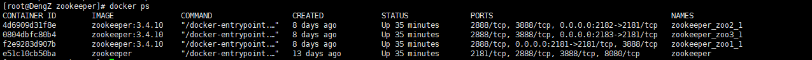

1.环境准备
使用CentOS7+Docker+Zookeeper3.4.10搭建dubbo微服务
1.1.安装docker容器
(1).uname -r：docker要求CentOS的内核版本高于3.10，所以推荐使用CentOS7及以上版本。可以通过命令uname -r查看系统的内核版本
(2).sudo yum update:确保yum包更新到最新
(3).subo yum install docker-ce-17.12.0.ce:安装docker
这种安装方式直接从centos中拉取，如果网络不好，很难拉取下来。那么可以通过设置安装源的方式从指定的位置下载
例如：sudo yum-config-manager --add-repo https://download.docker.com/linux/centos/docker-ce.repo。如果本地以及安装了docker，如果需要安装最新的docker，需要把原有的删掉，否则安装不上，删除旧版本命令：sudo yum remove docker docker-common docker-selinux docker-engine。
(4).sudo systemctl start docker：启动docker
启动后，建议设置开机自启docker：sudo systemctl enable docker，并通过命令docker version验证docker是否安装成功，如果出现以下界面，就安装成功
1.2.安装zookeeper
zookeeper主要用作服务中心，而dubbo官网最新的demo对zk的版本有要求，我试过最新的zk，是不兼容dubbo官网的demo的，所以我下载了zk3.4.10
(1).docker pull zookeeper:3.4.10:拉取zk
这里也可能存在无法拉取下来的，有2种方式解决，
a.自己下载一个zk，然后上传到centos上，再安装。
b.设置zk的源
(2).安装zk
因为一个一个地启动 ZK 太麻烦了, 所以为了方便起见, 我直接使用 docker-compose 来启动 ZK 集群.在user/local下创建docker/zookeeper目录，然后创建一个名为 docker-compose.yml 的文件, 其内容如下:
查看刚刚拉取的zk镜像，并启动
这里docker-compose命令可能没有，那么需要安装：
利用pip安装：
1.安装pip:
yum -y install epel-release
yum -y install python-pip
2.安装docker-compose
pip install docker-compose
(3).docker ps:查看docker容器中启动的zk

zookeeper端口号说明：
2181：客户端连接zookeeper集群使用的监听端口号
3888：选择leader使用
2888：集群内机器通讯使用（leader和follower之间数据同步使用的端口号，leader监听此端口）
(4).查看docker的运行状态
*主从节点是通过zk的选举机制选定的，这里2183的zNode设置的最大，所以被选为主节点是意料之中。
状态和上述图片一致，就证明启动成功了。如果没有启动成功，需要手动设置配置文件，第一次安装zk，存在配置文件不会自动创建的情形，可以进入docker容器，查看zk的配置文件是否存在缺失
docker中很多命令需要安装，否则没法使用。所以需要更新源apt-get update，但是docker的内核采用的是debian，服务器不在中国，基本上无法更新成功，那么这里就需要修改源，这里列举2个源，目前还能用：具体操作
先要更新系统的软件源：
sudo cp /etc/apt/sources.list /etc/apt/sources.list_bak #备份一下软件源
sudo vi /etc/apt/sources.list（这列vi可能也没法用，可以使用cat > << EOF强制写入，记得备份）
网易163更新服务器：
deb http://mirrors.163.com/debian/ squeeze main non-free contrib
deb http://mirrors.163.com/debian/ squeeze-proposed-updates main non-free contrib
deb-src http://mirrors.163.com/debian/ squeeze main non-free contrib
deb-src http://mirrors.163.com/debian/ squeeze-proposed-updates main non-free contrib
sohu 更新服务器：
deb http://mirrors.sohu.com/debian/ lenny main non-free contrib
deb http://mirrors.sohu.com/debian/ lenny-proposed-updates main non-free contrib
deb-src http://mirrors.sohu.com/debian/ lenny main non-free contrib
deb-src http://mirrors.sohu.com/debian/ lenny-proposed-updates main non-free contrib
2.使用dubbo-admin控制台
进入dubbo官网：http://dubbo.apache.org/zh-cn/docs/user/quick-start.html
安装官网文档，下载并启动dubbo-admin:
这个地方，dubbo-admin仓库很难下载，花了一周，把所有的jar包下下来了，我已经上传至百度云，欢迎下载
链接：https://pan.baidu.com/s/1-JnuKgpMk3qRL-61oEF0xg
提取码：o1bh
在dos下启动，如下图，启动成功
访问控制台：